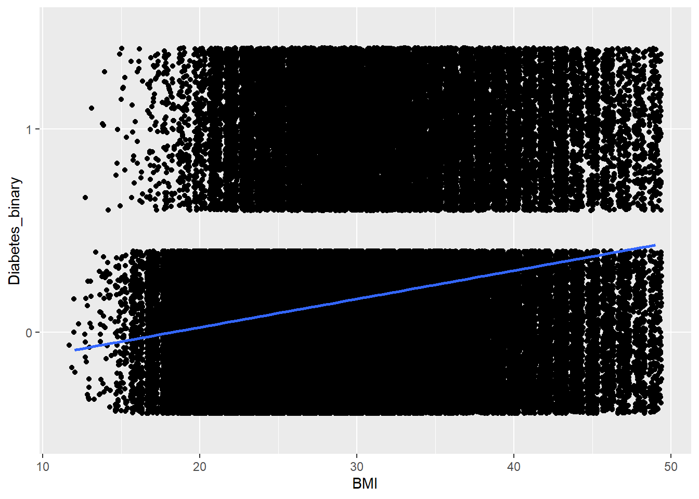
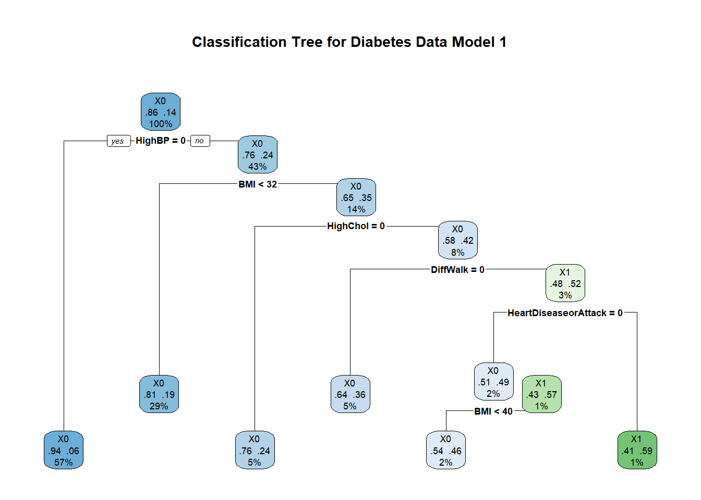
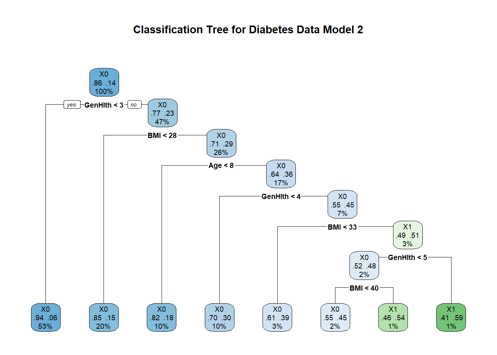
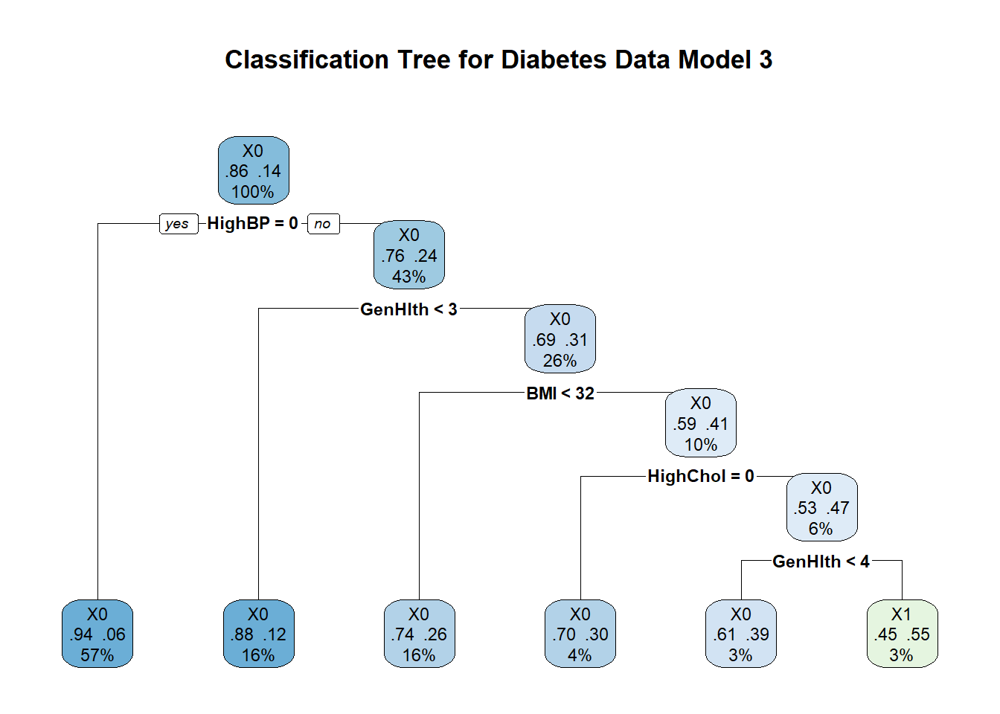
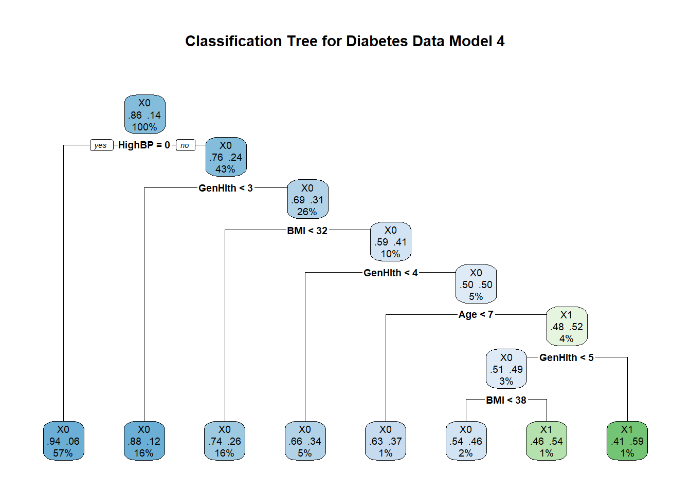
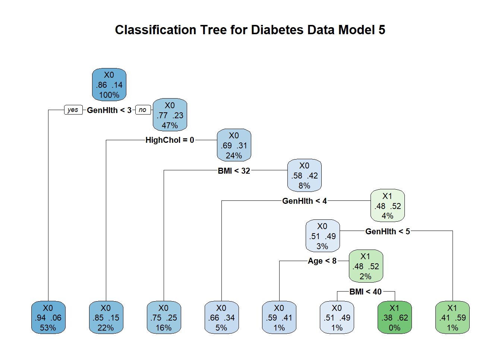

library(tidyverse)
library(dplyr)
library(caret)
library(ggplot2)
library(rpart)
library(rpart.plot)
library(tree)Diabetes Health Indicators - Modeling
Diabetes Health Indicators Modeling
After conducting an exploratory data analysis (EDA), our objective is to make predictions, uncover patterns within the data, and identify the most suitable model to describe the dataset. Key variables of interest include high cholesterol, high blood pressure, physical activity, fruit and vegetable consumption, body mass index, age, income, and education. Recognizing potential interactions between these variables, we will incorporate several models that account for hypothesized interactions.
We will fit logistic regression models, classification tree models, and random forest models. Following this, we will identify the best-performing model from each category and compare their performance on the test data to determine the overall best model.
#Read in the dataset
diabetes_data_raw <- read_csv("diabetes_binary_health_indicators_BRFSS2015.csv")Data Preparation for Modeling
Using the caret package syntax, I have split the data into train and test at a 70:30 ratio respectively.
#Split the data using caret package syntax
set.seed(13579)
diabetesIndex <- createDataPartition(diabetes_data_clean$Diabetes_binary, p = 0.7, list = FALSE)
diabetes_train <- diabetes_data_clean[diabetesIndex, ] #Count = 175,794
diabetes_test <- diabetes_data_clean[-diabetesIndex, ] #Count = 75,339
#I had some problems downstream while planning and executing code to build models. R does not like when I run train() on a response variable with strictly numeric factors. The following code corrects that issue by changing the response values from "0" and "1" to "X0" and "X1". Henceforth, "X0" will indicate patients who do not have a diabetes diagnosis while an "X1" will affirm a diabetes diagnosis.
# Rename levels to valid variable names
levels(diabetes_train$Diabetes_binary) <- make.names(levels(diabetes_train$Diabetes_binary))
levels(diabetes_test$Diabetes_binary) <- make.names(levels(diabetes_test$Diabetes_binary))Caret contains a trainControl() function that allows the setting of modeling parameters
# Define the control using a 5-fold cross-validation
train_control <- trainControl(method = "cv", number = 5, summaryFunction = mnLogLoss, classProbs = TRUE)
#NOTES: classProbs has to be TRUE for mnLogLoss to work.
#Source: https://stackoverflow.com/questions/59669490/error-with-caret-and-summaryfunction-mnlogloss-columns-consistent-with-lev
#tuningParam <- Log Loss and Logistic Regression Modeling
Log loss is preferred when datasets have binary response variables over other measurement metrics like accuracy because of the penalty it places on incorrect predictions. Log Loss compares prediction probabilities to binary output; and evaluates probability estimates which make for a more robust measurement method over accuracy for probabilistic models.
Using linear modeling might not be appropriate for this data. Logistic regression modeling would be a better alternative. In the plot below, notice that the linear regression line does not fit our data well for a variable BMI. The entire linear regression line completely avoids the positive diabetes diagnosis points.
ggplot(diabetes_data_clean, aes(x = BMI, y = Diabetes_binary)) +
geom_jitter() +
geom_smooth(method = "lm", aes(group = 1))`geom_smooth()` using formula = 'y ~ x'
Logistic Regression Models
# Base Model with no interactions
set.seed(13579)
base_model_LogReg <- train(Diabetes_binary ~ .,
data = diabetes_train,
method = "glm",
family = binomial,
trControl = train_control,
metric = "logLoss")
# Model 1: HighChol, HighBP
set.seed(13579)
model_1_LogReg <- train(Diabetes_binary ~ . -GenHlth -Age,
data = diabetes_train,
method = "glm",
family = binomial,
trControl = train_control,
metric = "logLoss")
# Model 2: CholCheck, AnyHealthcare, BMI, Fruits
set.seed(13579)
model_2_LogReg <- train(Diabetes_binary ~ . -HighBP -HighChol,
data = diabetes_train,
method = "glm",
family = binomial,
trControl = train_control,
metric = "logLoss")
# Model 3: CholCheck, HighChol
set.seed(13579)
model_3_LogReg <- train(Diabetes_binary ~ . -Age,
data = diabetes_train,
method = "glm",
family = binomial,
trControl = train_control,
metric = "logLoss")
# Model 4: Age, BMI, PhysActivity, Income, AnyHealthcare
set.seed(13579)
model_4_LogReg <- train(Diabetes_binary ~ . -HighChol,
data = diabetes_train,
method = "glm",
family = binomial,
trControl = train_control,
metric = "logLoss")
# Model 5: Age, Income, Education
set.seed(13579)
model_5_LogReg <- train(Diabetes_binary ~ . -HighBP,
data = diabetes_train,
method = "glm",
family = binomial,
trControl = train_control,
metric = "logLoss")
# Create a data frame to store the log-loss values
log_loss_results <- data.frame(
Model = c("Base Model", "Model 1", "Model 2", "Model 3", "Model 4", "Model 5"),
LogLoss = c(
min(base_model_LogReg$results$logLoss),
min(model_1_LogReg$results$logLoss),
min(model_2_LogReg$results$logLoss),
min(model_3_LogReg$results$logLoss),
min(model_4_LogReg$results$logLoss),
min(model_5_LogReg$results$logLoss)
)
)
# Print the log-loss results
print(log_loss_results) Model LogLoss
1 Base Model 0.3156608
2 Model 1 0.3286191
3 Model 2 0.3252869
4 Model 3 0.3203072
5 Model 4 0.3190218
6 Model 5 0.3202502# Find the model with the minimum log-loss
best_model <- log_loss_results[which.min(log_loss_results$LogLoss), ]
# Print the best model
print(best_model) Model LogLoss
1 Base Model 0.3156608Classification Tree
tree_control <- tree.control(nobs = nrow(diabetes_train), mincut = 1, minsize = 2)
set.seed(13579)
# Base Model with no interactions
base_model_tree <- rpart(Diabetes_binary ~ ., data = diabetes_train, method = "class", control = rpart.control(minbucket = 20, cp = 0.002))
# Plot the tree
base_model_rpart_plot <- rpart.plot(base_model_tree, type = 2, extra = 104, fallen.leaves = TRUE, main = "Classification Tree for Diabetes Data Base Model")# Predict on the test set
base_model_predictions <- predict(base_model_tree, diabetes_test, type = "class")
# Confusion matrix to evaluate the model
base_model_conf_matrix <- confusionMatrix(base_model_predictions, diabetes_test$Diabetes_binary)
set.seed(13579)
# Model 1: HighChol, HighBP
model_1_tree <- rpart(Diabetes_binary ~ . -GenHlth -Age, data = diabetes_train, method = "class", control = rpart.control(minbucket = 20, cp = 0.002))
# Plot the tree
model_1_rpart_plot <- rpart.plot(model_1_tree, type = 2, extra = 104, fallen.leaves = TRUE, main = "Classification Tree for Diabetes Data Model 1")
# Predict on the test set
model_1_predictions <- predict(model_1_tree, diabetes_test, type = "class")
# Confusion matrix to evaluate the model
model_1_conf_matrix <- confusionMatrix(model_1_predictions, diabetes_test$Diabetes_binary)
set.seed(13579)
# Model 2: CholCheck, AnyHealthcare, BMI, Fruits
model_2_tree <- rpart(Diabetes_binary ~ . -HighBP -HighChol, data = diabetes_train, method = "class", control = rpart.control(minbucket = 20, cp = 0.002))
# Plot the tree
model_2_rpart_plot <- rpart.plot(model_2_tree, type = 2, extra = 104, fallen.leaves = TRUE, main = "Classification Tree for Diabetes Data Model 2")
# Predict on the test set
model_2_predictions <- predict(model_2_tree, diabetes_test, type = "class")
# Confusion matrix to evaluate the model
model_2_conf_matrix <- confusionMatrix(model_2_predictions, diabetes_test$Diabetes_binary)
set.seed(13579)
# Model 3: CholCheck, HighChol
model_3_tree <- rpart(Diabetes_binary ~ . -Age, data = diabetes_train, method = "class", control = rpart.control(minbucket = 20, cp = 0.002))
# Plot the tree
model_3_rpart_plot <- rpart.plot(model_3_tree, type = 2, extra = 104, fallen.leaves = TRUE, main = "Classification Tree for Diabetes Data Model 3")
# Predict on the test set
model_3_predictions <- predict(model_3_tree, diabetes_test, type = "class")
# Confusion matrix to evaluate the model
model_3_conf_matrix <- confusionMatrix(model_3_predictions, diabetes_test$Diabetes_binary)
set.seed(13579)
# Model 4: Age, BMI, PhysActivity, Income, AnyHealthcare
model_4_tree <- rpart(Diabetes_binary ~ . -HighChol, data = diabetes_train, method = "class", control = rpart.control(minbucket = 20, cp = 0.002))
# Plot the tree
model_4_rpart_plot <- rpart.plot(model_4_tree, type = 2, extra = 104, fallen.leaves = TRUE, main = "Classification Tree for Diabetes Data Model 4")
# Predict on the test set
model_4_predictions <- predict(model_4_tree, diabetes_test, type = "class")
# Confusion matrix to evaluate the model
model_4_conf_matrix <- confusionMatrix(model_4_predictions, diabetes_test$Diabetes_binary)
set.seed(13579)
# Model 5: Age, Income, Education
model_5_tree <- rpart(Diabetes_binary ~ . -HighBP, data = diabetes_train, method = "class", control = rpart.control(minbucket = 20, cp = 0.002))
# Plot the tree
model_5_rpart_plot <- rpart.plot(model_5_tree, type = 2, extra = 104, fallen.leaves = TRUE, main = "Classification Tree for Diabetes Data Model 5")
# Predict on the test set
model_5_predictions <- predict(model_5_tree, diabetes_test, type = "class")
# Confusion matrix to evaluate the model
model_5_conf_matrix <- confusionMatrix(model_5_predictions, diabetes_test$Diabetes_binary)Random Forest
Final Model Selection
Appendix: Variable description
(Disease Control & Prevention, 2015)
Diabetes_binary
NOTE: The options present are different from the source data.
0 = no diabetes/prediabetes
1 = diabetes
HighBP
0 = no high BP
1 = high BP
HighChol
0 = no high cholesterol
1 = high cholesterol
CholCheck
0 = no cholesterol check in 5 years
1 = cholesterol check in 5 years
BMI
Continuous Data
Smoker
To the question: Have you smoked at least 100 cigarettes in your entire life? [Note: 5 packs = 100 cigarettes]
0 = no
1 = yes
Stroke
To the question: (Ever told) you had a stroke.
0 = no
1 = yes
HeartDiseaseorAttack
Coronary heart disease (CHD) or myocardial infarction (MI)
0 = no
1 = yes
PhysActivity
Physical activity in past 30 days (not including job)
0 = no
1 = yes
Fruits
Consume Fruit 1 or more times per day
0 = no
1 = yes
Veggies
Consume Vegetables 1 or more times per day
0 = no
1 = yes
HvyAlcoholConsump
(adult men >=14 drinks per week and adult women>=7 drinks per week)
0 = no
1 = yes
AnyHealthcare
Have any kind of health care coverage, including health insurance, prepaid plans such as HMO, etc.
0 = no
1 = yes
NoDocbcCost
To the question: Was there a time in the past 12 months when you needed to see a doctor but could not because of cost?
0 = no
1 = yes
GenHlth
To the question: Would you say that in general your health is: scale 1-5
1 = excellent
2 = very good
3 = good
4 = fair
5 = poor
MentHlth
Days of poor mental health scale 1-30 days
PhysHlth
physical illness or injury days in past 30 days scale 1-30
DiffWalk
Do you have serious difficulty walking or climbing stairs?
0 = no
1 = yes
Sex
0 = female
1 = male
Age
NOTE: The options present are different from the source data.
1 = Age 18 to 24 Respondents with reported age between 18 and 24 years (18 <= AGE <= 24)
2 = Age 25 to 29 Respondents with reported age between 25 and 29 years (25 <= AGE <= 29)
3 = Age 30 to 34 Respondents with reported age between 30 and 34 years (30 <= AGE <= 34)
4 = Age 35 to 39 Respondents with reported age between 35 and 39 years (35 <= AGE <= 39)
5 = Age 40 to 44 Respondents with reported age between 40 and 44 years (40 <= AGE <= 44)
6 = Age 45 to 49 Respondents with reported age between 45 and 49 years (45 <= AGE <= 49)
7 = Age 50 to 54 Respondents with reported age between 50 and 54 years (50 <= AGE <= 54)
8 = Age 55 to 59 Respondents with reported age between 55 and 59 years (55 <= AGE <= 59)
9 = Age 60 to 64 Respondents with reported age between 60 and 64 years (60 <= AGE <= 64)
10 = Age 65 to 69 Respondents with reported age between 65 and 69 years (65 <= AGE <= 69)
11 = Age 70 to 74 Respondents with reported age between 70 and 74 years (70 <= AGE <= 74)
12 = Age 75 to 79 Respondents with reported age between 75 and 79 years (75 <= AGE <= 79)
13 = Age 80 or older Respondents with reported age between 80 and 99 years (80 <= AGE <= 99)
Education
NOTE: The options present are different from the source data.
1 = Never attended school or only kindergarten
2 = Grades 1 through 8 (Elementary)
3 = Grades 9 through 11 (Some high school)
4 = Grade 12 or GED (High school graduate)
5 = College 1 year to 3 years (Some college or technical school)
6 = College 4 years or more (College graduate)
Income
NOTE: The options present are different from the source data.
1 = Less than $10,000
2 = Less than $15,000 ($10,000 to less than $15,000)
3 = Less than $20,000 ($15,000 to less than $20,000)
4 = Less than $25,000 ($20,000 to less than $25,000)
5 = Less than $35,000 ($25,000 to less than $35,000)
6 = Less than $50,000 ($35,000 to less than $50,000)
7 = Less than $75,000 ($50,000 to less than $75,000)
8 = $75,000 or more
REMINDER TO DROP THE LINK TO THE EDA.QMD
References
Disease Control, C. for, & Prevention. (2015). BRFSS codebook 2015. https://www.cdc.gov/brfss/annual_data/2015/pdf/codebook15_llcp.pdf